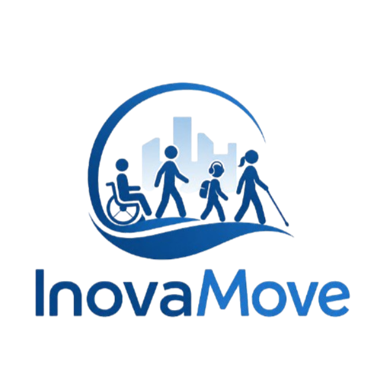

✦ Bem-vindo
Gustavo de Oliveira Thezolin
Estudo Ciência da Computação na UVV e gosto de ver uma ideia virar algo que funcione e que possa ser útil para as pessoas.
Projetos
O que já saiu do papel.

✦ Trabalho em equipe
InovaMove
Um site pensado para facilitar a vida de quem precisa de acessibilidade ao usar o Transcol, em Vitória. Nasceu como projeto da faculdade e foi apresentado na InovaWeek da UVV.
Dá para instalar no celular como se fosse um aplicativo e ajustar o visual às suas necessidades. As mudanças só valem para o site todo quando você salva, e antes disso aparece uma prévia.
Abrir o projeto no ar
✦ Eletrônica e robótica
Robô sumo
Um robô de combate montado por mim, com peças de eletrônica e carcaça impressa em 3D. O objetivo é simples: empurrar o adversário para fora da arena sem cair junto.
- Arduino
- Sensores
- Motores
- Impressão 3D
Ver como ele funciona
Robô sumo, por dentro
No sumô de robôs, dois competidores se enfrentam numa arena redonda escura, com a borda clara, e perde quem sai dela. Para ter chance, o robô precisa fazer três coisas: achar o adversário, não cair da arena e empurrar com força. Cada peça do meu robô cuida de uma parte disso.
Cérebro
Arduino Nano. Uma placa pequena que lê os sensores e decide o que os motores devem fazer.
Olho para o adversário
Sensor ultrassônico HC-SR04. Envia um pulso de som e mede quanto tempo o eco demora a voltar, o que dá a distância até o oponente.
Olho para o chão
Sensor de linha TCRT5000. Percebe a diferença entre o preto da arena e a borda clara, e avisa o robô antes que ele caia.
Músculos
2 motores N20 e ponte H TB6612FNG. Os motores giram as rodas, e a ponte H controla a velocidade e o sentido de cada um.
Energia
Bateria LiPo de 7,4 V e regulador LM2596. A bateria alimenta tudo, e o regulador reduz a tensão para um valor que os componentes aguentam.
Comando
Receptor infravermelho VS1838B. Recebe sinais de um controle remoto.
Corpo
Carcaça impressa em 3D e rodas macias. A estrutura abriga a eletrônica, e as rodas macias aderem melhor ao piso da arena.
A ideia de funcionamento
Em geral, um robô desse tipo gira procurando o oponente, avança quando o sensor de distância o encontra e recua ou desvia quando o sensor de linha detecta a borda da arena.
Sobre mim
Sou o Gustavo, estudante do 4º período de Ciência da Computação na UVV, em Vitória. Meu interesse por tecnologia cresce a cada semestre, e ainda estou descobrindo em qual área quero atuar. Por enquanto, meu foco é aprender fazendo.
Programo em C e estou aprendendo Java e orientação a objetos. Na web, trabalho com HTML, CSS e JavaScript, e aprendi Git e GitHub do zero ao publicar o InovaMove. Também me divirto com eletrônica: o robô sumo com Arduino foi meu primeiro projeto nessa área.
Fora da tela, gosto de jogar e pescar com os amigos.
- C
- Java
- JavaScript
- HTML e CSS
- Git e GitHub
- Arduino
Vamos conversar?
Estou em busca de um estágio em tecnologia. Se algum projeto chamou sua atenção, me escreva.